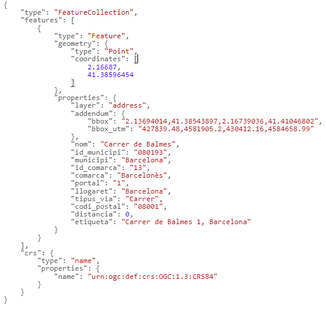

Búsqueda inversa
URL de conexión: https://eines.icgc.cat/geocodificador/invers (GET)
Descripción
La operación invers (geocodificación inversa) busca las direcciones y topónimos más próximos a un punto geográfico determinado, especificado por su latitud y longitud.
El resultado se obtiene en formato GeoJSON.
Por ejemplo, para buscar la dirección más próxima a las coordenadas 41.385965, 2.16687, hay que hacer la petición https://eines.icgc.cat/geocodificador/invers?lat=41.385965&lon=2.16687&size=1&layers=address, que tiene la respuesta: 
Construcción de la consulta
La petición al API se construye a partir de la #URL https://eines.icgc.cat/geocodificador/invers, seguida del signo ? y de la secuencia de parámetros, separados por el signo &.
Los parámetros son los siguientes:
-
lon, lat: son obligatorios y contienen las coordenadas del punto geográfico alrededor del cual se quiere hacer la búsqueda.
Ejemplo: http://eines.icgc.cat/geocodificador/invers?lon=0.20949814&lat=41.12599206
-
boundary.circle.radius: indica el radio del círculo de búsqueda (en #km).
-
layers: se utiliza para filtrar los tipos de elemento a buscar
Se pueden diferenciar los tipos de datos a buscar indicando el parámetro layers, con los valores siguientes:
. address: direcciones postales
. tops: todos los topónimos
. topo_tipo_id: topónimos del tipo id, donde id es una cadena con números entre 1 y 22, con el 0 a la izquierda por los menores de 10. Por ejemplo: topo_tipo_01* para buscar Caps de municipio. La tabla con los tipos de topónimo y sus identificadores se puede consultar en Tabla topónimos
Se pueden indicar los valores siguientes para segregar los topónimos en dos grupos:
. topo1: topónimos referentes a agrupaciones de población (municipios, capitales de municipio, entidades de población, diseminados y barrios)
. topo2: resto de topónimos.
Ejemplo, para encontrar topónimos: http://eines.icgc.cat/geocodificador/invers?lon=0.20949814&lat=41.12599206&layers=tops
-
size: se utiliza para definir el número máximo de resultados
Por defecto, se devuelven hasta 10 resultados de cada uno de los tipos indicados en layers. Se puede indicar un número diferente con el parámetro size. El valor máximo es 40.
Por ejemplo, para encontrar un único topónimo: http://eines.icgc.cat/geocodificador/invers?lon=0.20949814&lat=41.12599206&layers=tops&size=1
-
com: para filtrar por comarca
Permite especificar el nombre de la comarca o su identificador.
Se puede consultar el listado de comarcas en Tabla de comarcas
Ejemplos: https://eines.icgc.cat/geocodificador/invers?lon=2.094256&lat=41.432308&layers=tops&size=10&com=barcelones (indicando el nombre de comarca)
https://eines.icgc.cat/geocodificador/invers?lon=2.094256&lat=41.432308&layers=tops&size=10&com=13 (indicando identificador de comarca)
-
mun: para filtrar por municipio
Permite especificar el nombre del municipio o su identificador.
Se puede consultar el listado de municipios en Tabla de municipios
Ejemplos:
https://eines.icgc.cat/geocodificador/invers?lon=2.094256&lat=41.432308&layers=tops&size=10&mun=barcelona (indicando el nombre de municipio)
https://eines.icgc.cat/geocodificador/invers?lon=2.094256&lat=41.432308&layers=tops&size=10&mun=080193 (indicando identificador de municipio)
Parámetros de entrada
| Parámetro | Tipo | Obligatorio | Descripción | Valor por defecto | Ejemplo |
|---|---|---|---|---|---|
| lat | número de punto flotante | Si | latitud | 41.385965 | |
| lon | número de punto flotante | Si | longitud | ||
| boundary.circle.radius | número de punto flotante | No | radio del círculo de búsqueda (#km) | 1 | 0.5 |
| layers | cadena de texto | No | Tipo de elementos a buscar: [address, tops, topo_tipo_id, topo1, topo2] | topo1,topo2,address | address,topo1 |
| size | entero | No | Número de resultados. El máximo es 40 | 10 | 5 |
| com | cadena de texto | No | Identificador de una comarca, dentro de la que quiere restringir la búsqueda | cabe | 01 |
| mun | cadena de texto | No | Identificador de un municipio, dentro de la que quiere restringir la búsqueda | cabe | 080018 |
Parámetros de salida
Se devuelven los resultados en formato GeoJSON.
El elemento features.properties tiene los campos descritos a la tabla siguiente:
| Campo | Descripción | Aplicacble a los elementos |
|---|---|---|
| layer | Tipos de elemento encontrado. Los valores posibles son los indicados en el parámetro layers de entrada | Todos |
| distancia | Distancia en kilómetros del elemento encontrado al punto indicado | Todos |
| etiqueta | Agregación de campos. Por direcciones: calle portal, municipio (aldea). Nota: Si la aldea coincide con el municipio, no se indica. Por topónimos: topónimo, municipio | Todos |
| municipi | Municipio. En algunos topónimos , no hay un municipio asignado y toma el valor "-" | Todos |
| comarca | Comarca. En algunos topónimos , no hay una comarca asignada y toma el valor "-" | Direcciones |
| llogaret | Aldea | Direcciones |
| portal | Portal de la dirección | Direcciones |
| nom | Nombre de la calle, de la edificación aislada o de topónimo | Todos |
| codi_postal | Código postal | Direcciones |
| addendum.origen | Escala origen | Topónimos |
| addendum.zoom | Nivel de zoom óptimo | Topónimos |
| addendum.tipus | Tipo de topónimo | Topónimos |
| addendum.id_tipus | Identificador tipo de topónimo | Topónimos |
| addendum.municipis_extra | Resto de municipios asignados | Topónimos |
| addendum.bbox | Coordenadas geográficas del rectángulo contenedor de la calle | Direcciones |
| addendum.bbox_utm | Coordenadas UTM del rectángulo contenedor de la calle | Direcciones |
Ejemplos de salida según tipo de layer
| Dirección postal |
|---|
| https://eines.icgc.cat/geocodificador/invers?lon=2.13798&lat=41.4271&layers=address&size=1 |
 |
| Topónimo |
|---|
| https://eines.icgc.cat/geocodificador/invers?lon=0.20949814&lat=41.12599206&layers=tops&size=1 |
 |